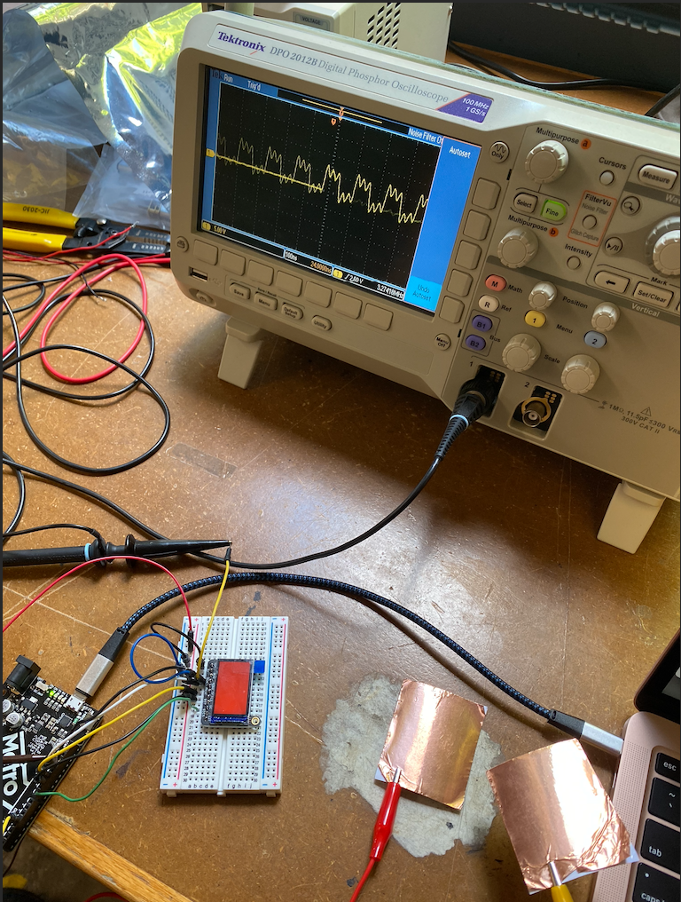

This weeks assignment was to use an output device that you haven't used before today, to write a microcontroller program that integrates at least one input device and one output device, use an oscilloscope to discover the time domain at which the output device is operating, and to prepare a CAD file for CNC.
I decided to experiment with a TFT display, and I wanted to hook it up to the sensor I made last class. Specficially, I wanted to make the display change colors when the sensors were close. It was a little bit of a learning curve to understand the Adafruit display. Eventually I found the code to change the background color, and I wanted to change it into a class for the assignment. After tinkering for a bit, the class I came up with was:
class Background
{
public:
int bgColor;
void screen(int color) {
tft.fillScreen(color);
}
Background(int);
};
Background::Background(int backgroundColor): bgColor(backgroundColor) {
}
// initializing some things
Adafruit_ST7789 tft = Adafruit_ST7789(TFT_CS, TFT_DC, TFT_RST);
int red = ST77XX_RED;
int blue = ST77XX_BLUE;
long result; // variable for the result of the tx_rx measurement.
int analog_pin = A3;
int tx_pin = 4;
Background bg = Background(red);
Now, I referenced the Adafruit libraries graphics test for this, so I had to be careful with the code I modified. So, for my void setup, I had:
void setup(void) {
Serial.begin(9600);
Serial.print(F("Hello! ST77xx TFT Test"));
pinMode(tx_pin, OUTPUT);
pinMode(13, OUTPUT);
Serial.begin(9600);
tft.init(135, 240);
Serial.println(F("Initialized"));
uint16_t time = millis();
tft.fillScreen(ST77XX_BLACK);
time = millis() - time;
Serial.println(time, DEC);
delay(500);
}
Finally, the if statement to change the screen.
void loop() {
result = tx_rx();
Serial.println(result);
if (result > 6000 && result < 12000) { //this makes the sensor work capacitively
bg.bgColor = red;
bg.screen(bg.bgColor);
} else {
bg.bgColor = blue;
bg.screen(bg.bgColor);
}
}
There was a lot more to the code, but there is only so much I can include. The link to the Arduino code is here. Here's a gif of the sensor in action!

Next there was using and reading the oscilloscope. Here is the photo of it:
From this photo, I figured out the output device was operating on a fixed clock. The speed/frequency of it was 3.27 MHz, and the time domain it operated on was 24 nanoseconds. Reading the oscilloscope was intimidating at first, but it was easier to understand after I looked around on the internet for how it worked.
Finally, there was the file to make for CNC milling next class. I designed a small circular tray for rings or jewlery, but I don't know if the file will work yet. It is here, but I'm still planning on updating it during next class.